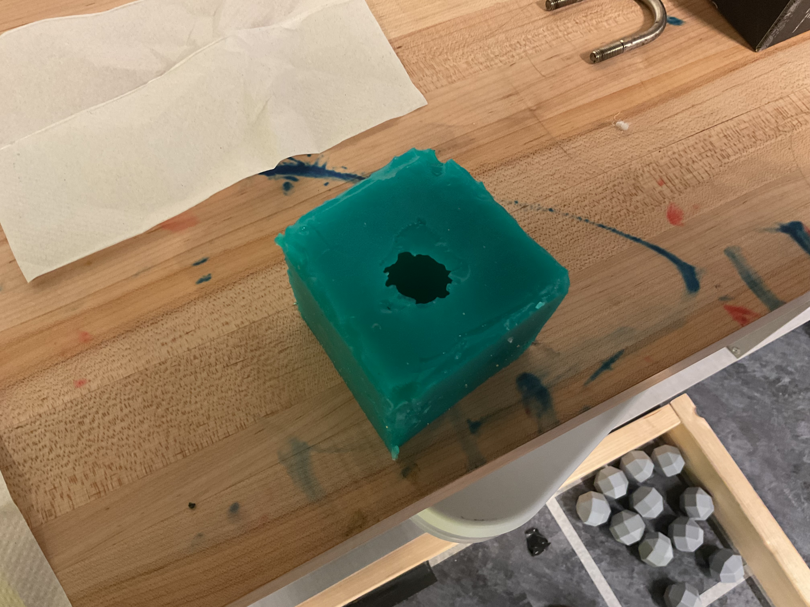
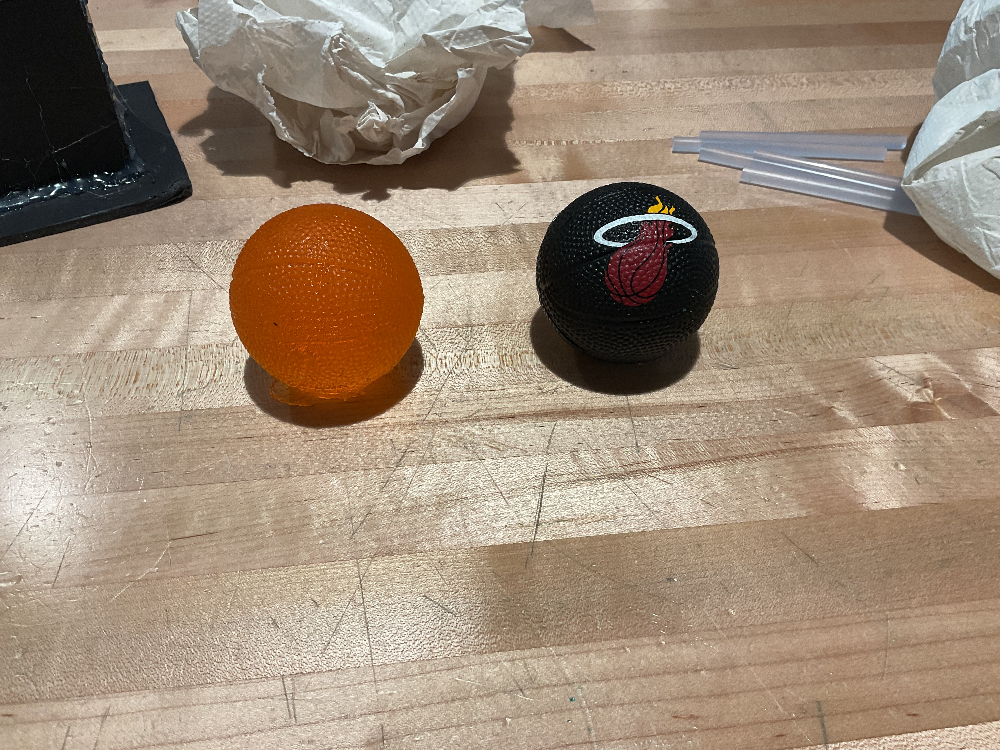

I started the mold by creating a box that was wide and tall enough to hold a tiny basketball squish toy and have space to create a mold.
This was the mold after 2 days of solidifying and having that object which was a ball already removed from being inside. After this I would pour liquid into the mold to have my final product come out.
This is my final result with the orange ball on the left being the final product using the mold and the normal ball on the right being the original object that was molded.